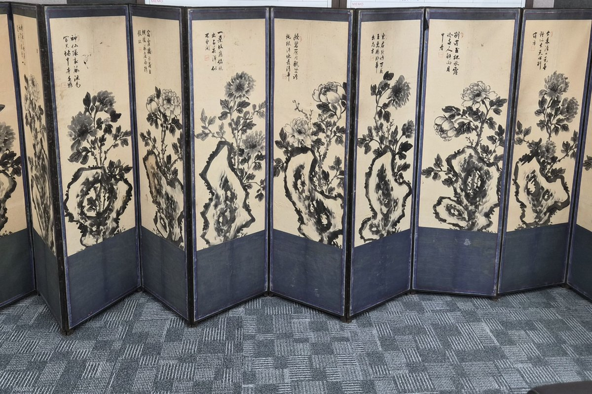
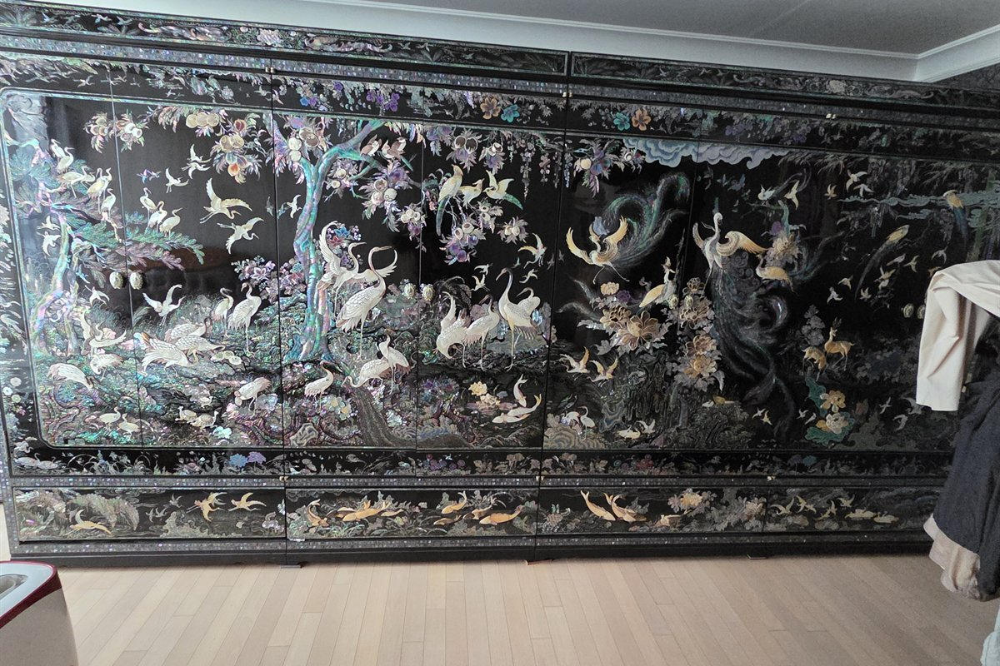
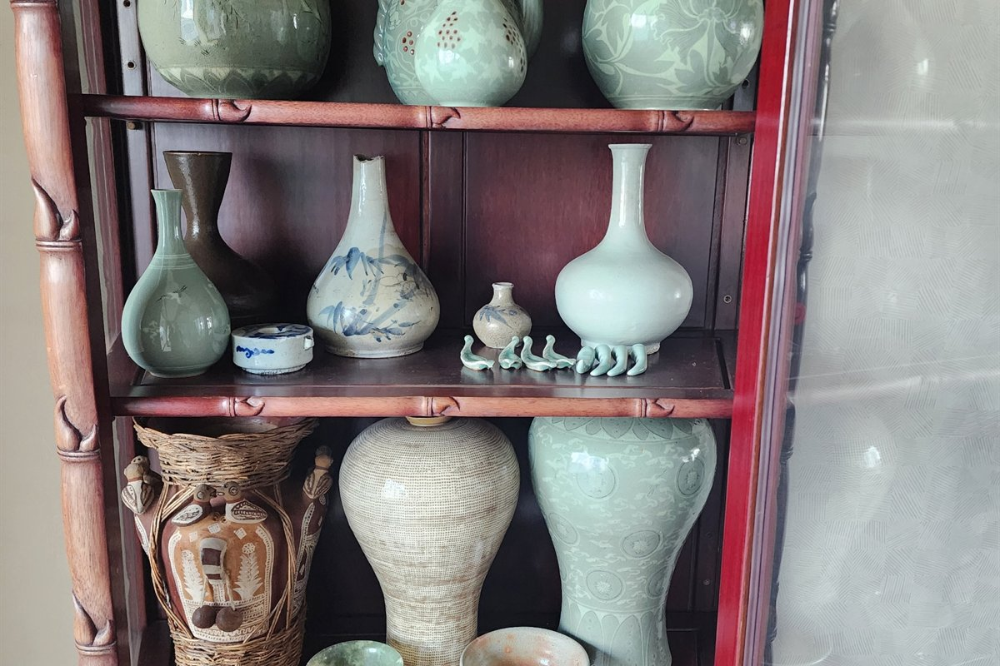
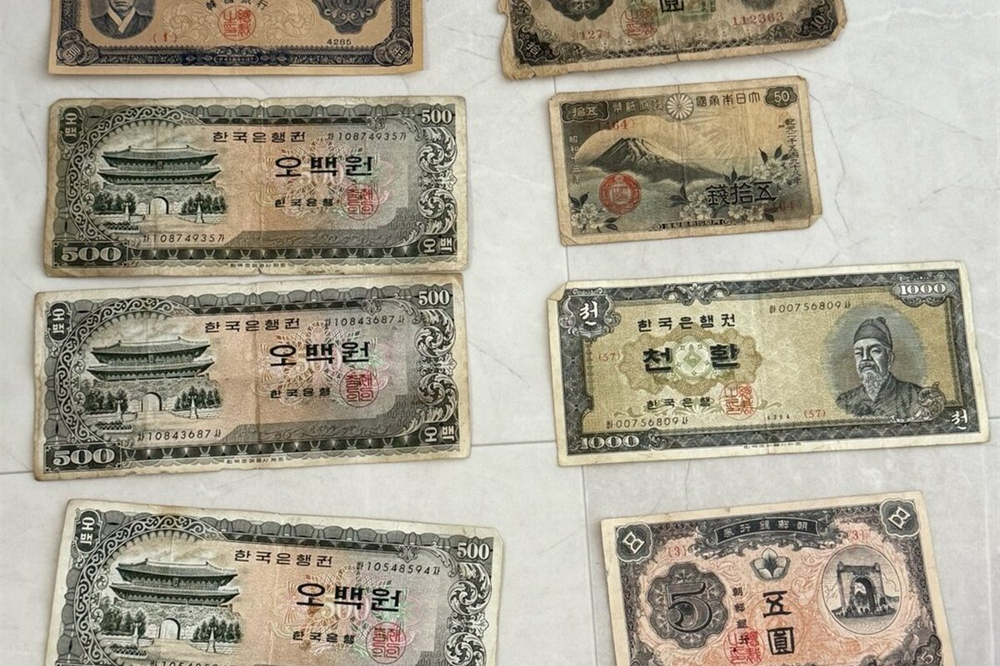
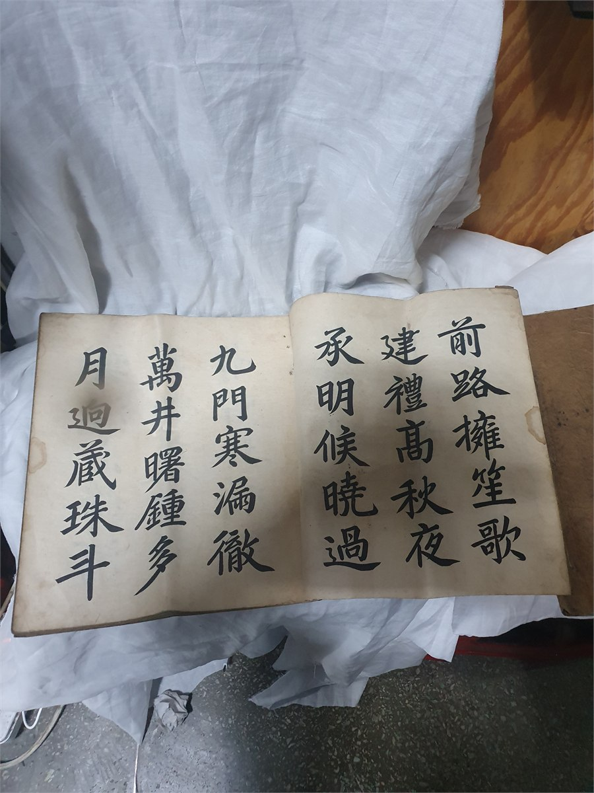
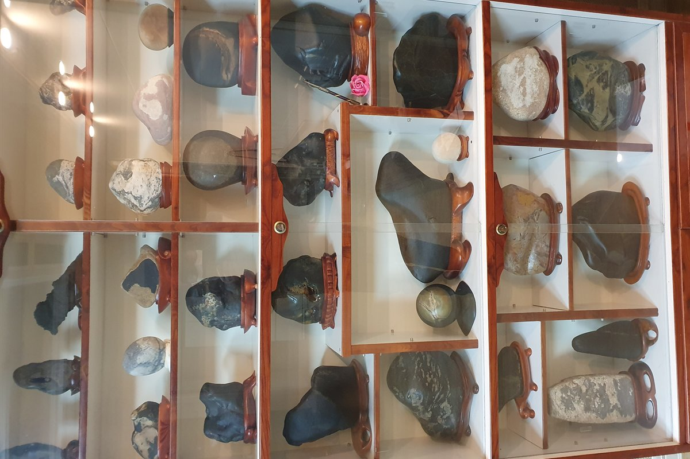

사진 확인
전체 모습, 바닥면, 표식이나 낙관을 여러 각도로 보내주시면 1차로 확인합니다.
사진 한 장부터 시작하는 전문 감정
도자기와 고가구부터 고서·옛 지폐·수석·근현대사 생활자료까지 다년간의 경험으로 확인하고 투명하게 매입합니다.
주요 매입 품목
아래 품목이 아니어도 오래된 물건이라면 사진을 보내주세요. 매입 가능 여부부터 안내합니다.






정직한 매입 절차
전체 모습, 바닥면, 표식이나 낙관을 여러 각도로 보내주시면 1차로 확인합니다.
실물 확인이 필요한 경우 약속된 시간에 방문해 상태와 시세를 설명드립니다.
제시 금액에 동의한 물품만 매입하며, 합의 후 안전하게 반출하고 정산합니다.
감정 기준
오래됐다는 이유만으로 모두 고가품은 아닙니다. 제작 시기와 희소성, 상태, 작가·제작처, 현재 거래 수요를 함께 살핍니다.
제작 연대, 작가, 낙관, 구입 경로와 관련 기록
균열, 수리, 변색, 구성품 보존 여부
동일 유형의 유통량과 제작 품질
최근 거래 사례와 수집 시장의 선호도
FAQ
사진으로 품목과 방문 필요 여부를 먼저 확인할 수 있습니다. 정확한 매입가는 크기와 상태, 표식 등을 실물로 확인한 뒤 안내합니다.
사진 상담과 협의된 방문 견적은 무료입니다. 방문 거리와 품목을 먼저 확인해 일정을 안내드립니다.
손상이 있어도 희소성과 자료 가치가 남아 있을 수 있습니다. 임의로 수리하거나 닦지 말고 현재 상태 그대로 사진을 보내주세요.
가능합니다. 방이나 진열장 전체 사진과 개별 물품 사진을 함께 보내면 분류와 상담이 더 빠릅니다.
매입 여부는 품목별로 안내하며 강제로 처분하지 않습니다. 집정리가 함께 필요한 경우 별도의 정리 견적을 협의할 수 있습니다.
광주·전남·전북을 중심으로 출장하며, 품목과 수량에 따라 다른 지역도 상담할 수 있습니다.
상담과 사진 감정은 무료입니다. 물건의 전체 모습과 표식을 함께 보내면 더 빠르게 확인할 수 있습니다.
상담 및 방문 견적 비용은 무료입니다.